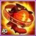
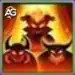
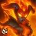
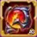
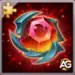
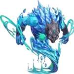

Asherona, a inigualável Invocadora de Fogo, transforma esse elemento em uma força imparável. Com sua invocação flamejante ao lado, ela libera um dano massivo, queima tudo em seu caminho e consolida sua posição no topo da hierarquia dos Titãs.
Este guia explora o papel de Asherona em Hero Wars Alliance, revelando sua sinergia ardente com outros Titãs de Fogo e por que ela se destaca como um dos maiores pilares para a dominação em masmorras. Se você está pronto para incendiar sua equipe de Titãs e dominar sua chama destrutiva, aqui começa sua jornada.
Guia da Asherona - Hero Wars Alliance, um jogo desenvolvido pela Nexters.
Quem é Asherona?
Asherona é uma Invocadora de Fogo da Linha do Meio que se destaca em esmagar inimigos com seus devastadores poderes flamejantes. Ela se torna especialmente poderosa quando luta ao lado de seis Titãs de Fogo, tornando-se uma peça essencial para maximizar o potencial da sua equipe.
Função: Invocadora
Elemento: Fogo
Posição: Linha do Meio
Sinergia: Titãs de Fogo, especialmente com seis em campo
Ranking de Masmorra: S+
Atributos:
Vida: 8.690.806
Ataque Físico: 566.355
Dano Extra contra Titãs de Terra: 255.000
Defesa Extra contra Titãs de Terra: 100.500
Suas invocações flamejantes garantem que Asherona nunca lute sozinha. Isso a torna não apenas uma causadora de dano temível, mas também uma vantagem tática em longas corridas de masmorra, onde resistência e sinergia são cruciais.
Se o seu objetivo é dominar as masmorras e fortalecer seu grupo de Titãs, dominar a Asherona é a chave para incendiar o campo de batalha e garantir a vitória.
Prós e Contras da Asherona - Hero Wars Alliance
✅ Prós
✔ Alto poder de Ataque Físico, tornando-a uma forte causadora de dano nas batalhas.
✔ O Artefato de Arma aumenta o Ataque Físico de todos os titãs aliados quando sua ultimate é ativada, ampliando o dano de toda a equipe.
✔ O Artefato de Coroa aumenta tanto seu poder ofensivo quanto sua resistência contra Titãs de Terra, dando-lhe vantagem em confrontos elementares.
✔ Evolui muito bem com a progressão dos artefatos, o que pode melhorar significativamente seu desempenho geral a longo prazo.
❌ Contras
❌ Extremamente vulnerável a Titãs de Água como Sigurd, Hyperion, Nova e Mairi, que podem contra-atacar ou reduzir seu impacto nas lutas.
❌ Depende fortemente de artefatos evoluídos para ser eficaz, o que exige tempo e recursos.
❌ Atualmente limitada à Skin Padrão, reduzindo sua flexibilidade em comparação com outros titãs que possuem várias skins disponíveis.
❌ Menos versátil contra inimigos que não sejam de Terra, tornando-a situacional em certas batalhas.
Prioridade de Evolução das Habilidades da Asherona - Hero Wars Alliance
Saiba quais habilidades da Asherona evoluir primeiro em Hero Wars Alliance. Maximize seu poder de fogo, sinergia e domínio nas masmorras passo a passo.

Filha da Chama
Esta é a habilidade suprema da Asherona e o verdadeiro coração de seu poder. Quando ativada, ela invoca uma entidade flamejante no centro da equipe inimiga que queima continuamente tudo ao seu redor. Ela não pode ser atacada, o que significa que causa dano constante com segurança.
O motivo dessa habilidade ter a mais alta prioridade é porque define o papel de Asherona como Invocadora. Sem ela, seu potencial de dano e controle de campo cairiam drasticamente. É a base de sua eficácia em masmorras e batalhas.
Prioridade de Evolução:Muito Alta – Maximize primeiro para desbloquear todo o potencial destrutivo da Asherona.

Bênção Flamejante
Esta habilidade passiva fortalece todos os Titãs de Fogo, concedendo-lhes ataques mais fortes, energia extra, bônus de defesa e até mesmo marcando inimigos para aumentar o dano que sofrem de habilidades baseadas em fogo. Quanto mais Titãs de Fogo em campo, mais poderosa a bênção se torna.
Ela tem prioridade um pouco menor que a suprema, pois sua verdadeira força brilha quando você possui uma equipe completa de Titãs de Fogo. Ainda assim, evoluí-la aumenta significativamente a sinergia e a sobrevivência da equipe, tornando Asherona inestimável em batalhas e masmorras de grande escala.
Prioridade de Evolução:Alta – Evolua após a suprema para reforçar a sinergia da equipe e o dano de fogo.
Melhor Skin para a Titã Asherona em Hero Wars Alliance
Descubra a prioridade de skins da Asherona em Hero Wars Alliance. Veja como sua skin padrão aumenta o dano e por que deve ser a primeira a ser evoluída.

Skin Padrão
A Skin Padrão aumenta o Ataque Físico da Asherona em 196.800, fortalecendo diretamente sua suprema Filha da Chama e seus ataques normais. Como Asherona é, principalmente, uma Titã causadora de dano, isso torna sua skin padrão a melhoria mais valiosa para maximizar seu poder destrutivo.
Prioridade de Evolução:Muito Alta – Atualmente é sua única skin, e evoluí-la é essencial para aumentar seu dano total.
No momento, Asherona possui apenas sua skin padrão, o que torna a prioridade bastante simples. No entanto, se ela receber skins adicionais no futuro, a prioridade de skins da Asherona poderá mudar dependendo se elas fornecerem mais sobrevivência ou bônus de dano. Por agora, a melhor skin da Asherona em Hero Wars é claramente a padrão, tornando-a o melhor investimento de skin para a Asherona. Os jogadores devem ficar atentos a futuras atualizações e ajustar a ordem de skins da Asherona conforme necessário.
Prioridade de Evolução dos Artefatos da Asherona - Hero Wars Alliance
Descubra a melhor prioridade de evolução dos artefatos da Asherona em Hero Wars Alliance. Saiba quais evoluções de artefato aumentam mais suas habilidades e fortalecem sua equipe.

1º - Artefato de Arma: Olho de Ragni
O Artefato de Arma é ativado quando Asherona usa sua suprema Filha da Chama, concedendo um +120.000 de Ataque Físico para toda a equipe por 9 segundos. Como o papel principal da Asherona é causar enorme dano por meio de sua invocação, evoluir este artefato primeiro maximiza tanto o seu dano quanto o poder de fogo geral da equipe.
Prioridade de Evolução:Muito Alta – Sempre maximize este primeiro para fortalecer tanto a Asherona quanto seus aliados.

2º - Artefato de Coroa: Coroa de Fogo
O Artefato de Coroa concede +255.000 de dano extra contra Titãs de Terra e +100.500 de defesa extra contra Titãs de Terra. Isso o torna extremamente valioso em batalhas onde os Titãs de Terra são os principais adversários. Embora não aumente diretamente o dano base da Asherona, fornece vantagens cruciais em confrontos específicos, especialmente em masmorras ou batalhas de Titãs.
Prioridade de Evolução:Alta – Evolua em segundo lugar para ganhar vantagem contra Titãs de Terra.
3º - Artefato de Selo: Selo da Invocação
O Artefato de Selo aumenta +97.500 de Ataque Físico e +3.975.000 de Vida. Embora esses sejam bônus sólidos para a sobrevivência e desempenho geral da Asherona, não são tão impactantes quanto a Arma ou a Coroa. Este artefato fornece durabilidade a longo prazo e um pouco de dano extra, mas deve ser considerado seu investimento final.
Prioridade de Evolução:Média – Evolua por último para ganhar atributos extras depois que os artefatos principais estiverem maximizados.
Atualmente, a prioridade de artefatos da Asherona em Hero Wars Alliance recomendada é: Arma (Olho de Ragni) → Coroa (Coroa de Fogo) → Selo (Selo da Invocação). Essa ordem garante que você maximize primeiro o dano de invocação dela, fortaleça suas vantagens elementais em segundo lugar e, por fim, adicione sobrevivência e atributos balanceados.
Como Contra-atacar a Titã Asherona - Hero Wars Alliance
A Titã Asherona é uma Titã de Fogo que depende de Filha da Chama e de suas invocações flamejantes para esmagar os inimigos.
Para derrotá-la de forma eficaz, você precisa de Titãs de Água que possam reduzir o dano, curar aliados, controlar o campo de batalha
e puni-la diretamente com a vantagem elemental. Abaixo estão os melhores contra-ataques e como funcionam contra a Asherona.
Por que Hyperion derrota Asherona: Sua habilidade Agulhas de Gelo atinge a retaguarda inimiga,
causando alto dano de água e punindo o estilo de jogo da Asherona baseado em invocações.
Sua habilidade de cura também mantém os aliados vivos contra o dano contínuo de fogo dela.
Mairi

Por que Mairi derrota Asherona: Sua habilidade Maldição do Abismo reduz o Ataque de todos os inimigos em 40% por 8 segundos.
Isso enfraquece drasticamente o dano de fogo da Asherona e torna suas invocações muito menos ameaçadoras.
Por que Nova derrota Asherona: Seu projétil Vento do Norte atordoa inimigos da retaguarda por 4 segundos.
Isso interrompe o fluxo de dano da Asherona e dá à sua equipe tempo crítico para contra-atacar.
Sendo do elemento Água, seus ataques também causam dano extra contra Titãs de Fogo como a Asherona.
Por que Sigurd derrota Asherona: Sua habilidade Égide Congelada o torna imune a todo dano por 5 segundos,
bloqueando o alto dano explosivo de fogo da Asherona. Como tanque de Água, ele oferece tanto proteção na linha de frente quanto
vantagem elemental contra os ataques dela.
Em resumo, os melhores contra-ataques à Titã Asherona são Hyperion, Mairi, Nova e Sigurd.
Juntos, eles reduzem seu dano, protegem a equipe, curam através de suas chamas e revidam com forte dano de Água.
Essa composição de equipe torna o poder de fogo da Asherona muito menos perigoso.
Conclusão - Titã Asherona Hero Wars Alliance
Asherona é uma formidável Titã de Fogo cujo poder está em seu alto dano e em sua capacidade de fortalecer os Titãs de Fogo aliados.
Com os artefatos certos, em especial o Olho de Ragni e a Coroa de Fogo, ela pode dominar batalhas e garantir a vitória contra Titãs de Terra.
No entanto, os jogadores devem ter cautela com os contra-ataques dos Titãs de Água, como Sigurd, Hyperion, Nova e Mairi, que podem interromper suas invocações e reduzir seu impacto.
Para maximizar o potencial da Asherona, foque primeiro na evolução de seus principais artefatos, mantenha a sinergia com outros Titãs de Fogo e posicione-a estrategicamente na linha do meio para usar sua ultimate com eficiência.
Seja em masmorras, PvP ou batalhas de Titãs, um bom planejamento e atenção aos contra-ataques garantirão que ela brilhe como uma das principais causadoras de dano da sua equipe.
Sobre o autor
Alexandre Domingos é pós-graduado em Engenharia e atua como Supervisor de Produção. Nas horas vagas, se aventura como youtuber e blogueiro no Alexandre Games, unindo sua paixão por tecnologia e estratégia com o mundo dos games. Desde os 5 anos mergulha nesse universo, jogando em plataformas clássicas como MSX, Master System, Nintendo e até em um velho PC 286. Desde 2019, Alexandre também joga Hero Wars e Mobile Legends, entre outros jogos mobile, criando guias, tutoriais e análises para a comunidade.
Sugestões de Vídeo:
Vídeo: Guia completo para a nova Titã de Fogo Asherona - Hero Wars Alliance
Você gostou do nosso Guia da Titã Asherona para Hero Wars Mobile? Há algo que não entendeu ou gostaria de sugerir mudanças? Convidamos você a se juntar à nossa sessão de comentários na página do Alexandre Games Blog. Não hesite em expressar sua opinião, clarificar suas dúvidas e compartilhar sua sugestões. Clique no botão abaixo para começar:


 Titã Moloque Hero Wars Alliance
Titã Moloque Hero Wars Alliance Titã Mort Hero Wars Mobile
Titã Mort Hero Wars Mobile Titã Rigel Hero Wars Alliance
Titã Rigel Hero Wars Alliance  Super Titã Solaris Hero Wars Mobile
Super Titã Solaris Hero Wars Mobile Super Titã Tenebris Hero Wars
Super Titã Tenebris Hero Wars Guia do Titã Verdoc – Hero Wars Alliance: Mestre das Invocações da Terra
Guia do Titã Verdoc – Hero Wars Alliance: Mestre das Invocações da Terra